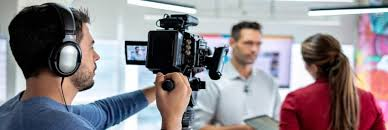

Jornalista é o profissional formado em Jornalismo. É a pessoa responsável pela apuração, investigação e apresentação de notícias, reportagens, entrevistas ou distribuição de notícias ou outra informação de interesse coletivo. O trabalho do jornalista é chamado jornalismo. Um jornalista pode trabalhar com questões gerais ou especializar-se em determinadas áreas. No entanto, a maioria dos jornalistas tendem a se especializar, e cooperando com outros jornalistas, produzir publicações que abrangem muitos tópicos.[1] Por exemplo, um jornalista esportivo cobre notícias dentro do mundo dos esportes, mas este jornalista pode ser uma parte de um jornal que cobre diversos temas. O exercício do Jornalismo é privativo de jornalista. Entre as áreas em que o jornalista trabalha estão o Radiojornalismo, Telejornalismo,
fatores primordiais a defesa das liberdades de imprensa e de expressão, o jornalista é um dos principais pilares da democracia.
Os jornalistas, por vezes, se expõem ao perigo, particularmente quando relatando em áreas de conflito armado ou em estados que não respeitam a liberdade de imprensa. Organizações como a Committee to Protect Journalists e a Repórteres sem Fronteiras publicam relatórios sobre a liberdade de imprensa e defende a liberdade jornalística. Em novembro de 2011, o Committee to Protect Journalists relatou que 887 jornalistas foram mortos no mundo inteiro desde 1992 por homicídio (71%), fogo cruzado ou combate (17%), ou em atribuição perigosa (11%). Os "dez países mais letais" para jornalistas desde 1992 tem sido Iraque (230 mortes), Filipinas (109), Rússia (77), Colômbia (76), México (69), Argélia (61), Paquistão (59), Índia (49), Somália (45), Brasil (31) e Sri Lanka (30).[4]
Jornalista sentado é um conceito, originalmente do francês “journaliste assis”, e o oposto do “journaliste debout”, jornalista de pé. Como o seu próprio nome sugere, uma das suas características marcantes está no fato do jornalista trabalhar sentado. Outro ponto acerca desse profissional é que o mesmo se relaciona mais ao tratamento do texto, que da própria apuração.[8]
O surgimento do jornalista sentado é bastante associado ao advento da internet e do jornalismo em rede. Contudo, é notório que esse conceito não se limita apenas ao segmento do webjornalismo.
Sabe-se que, ao longo da história do jornalismo, já existiam profissionais com as características de um jornalista sentado nas redações.
No livro “A arte de fazer um jornal diário”, Ricardo Noblat já fala em “grande figura humana”, termo que ele utiliza para referir-se aos trabalhadores da redação que não escreviam bem, tampouco apuravam.
A função desse profissional, em relação ao jornalismo online, é que ele utiliza a informação já pronta de fontes externas, como as agências de notícias, os portais vinculados à rede no qual trabalha e as assessorias de comunicação e/ou imprensa, por exemplo. Ele organiza essa informação recebida a adaptando ao formato desejado. Esse profissio
